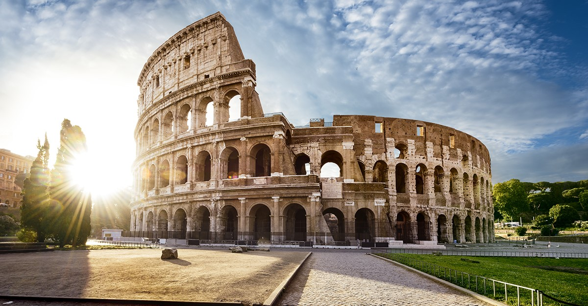

|  |
El Coliseo se convirtió en el mayor anfiteatro romano, con una estructura elíptica de 188 metros de longitud, 156 metros de ancho y 57 metros de altura. Realizado en ladrillo y cubierto con travertino se dividía en cinco niveles con una capacidad para más de 50.000 personas. |
La construcción del Coliseo empezó bajo el emperador Vespasiano, en torno al año 71 d.C., en un espacio que había quedado liberado tras el incendio de un anfiteatro anterior levantado casi cien años atrás. La inauguración –cuyos festejos se prolongaron durante cien días– se produjo en el año 80 y ya bajo el reinado de su hijo Tito. Finalmente, el emperador Domiciano culminó las obras en el 82, añadiendo un último piso |
|